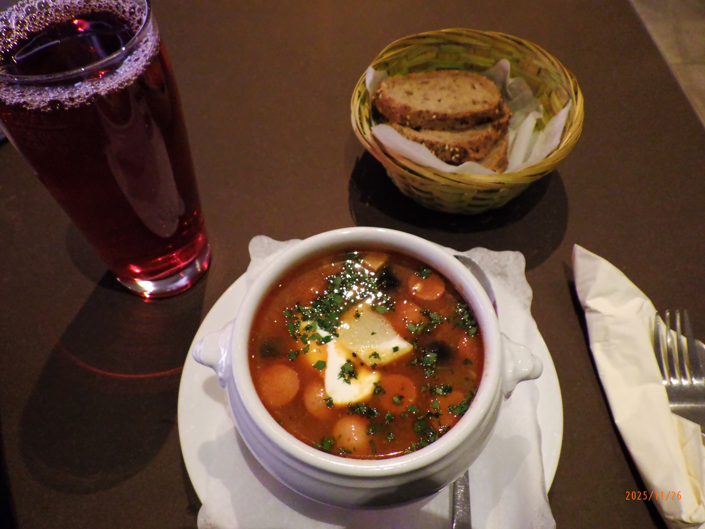
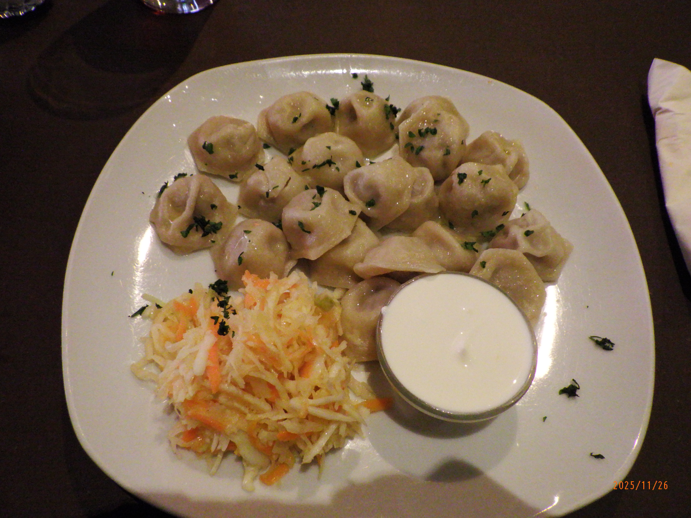
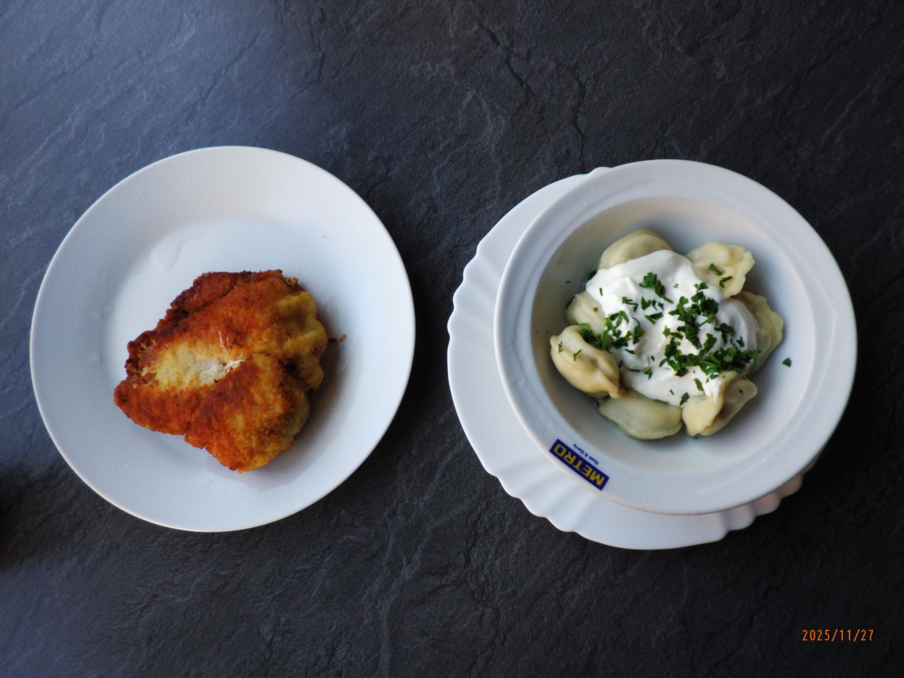

Over the past decade or so, Asian cuisines became remarkably popular in American cities. Yet much of this attention, especially on social media, remains focused on Japanese, Korean, and Chinese food. We often overlook the largest country in Asia: Russia. Despite its enormous land area, I could not name a single Russian dish before meeting Katia. She told me there is a saying that Russia has only bad food because all the good recipes disappeared during the Communist Revolution. But China also experienced a communist revolution yet it maintained its culinary tradition, so this explanation never seemed entirely convincing. As an American unable to enter Russia, I became even more curious about its food culture.
Berlin has a complicated relationship with Russia because East Berlin was under Soviet control from 1945 to 1990. In other words, someone born in Mitte—a popular neighborhood—in 1945 would have been 45 by the time they could call themselves a citizen of democratic Germany rather than the Soviet bloc. I first visited Berlin for fun as an undergraduate, partly because I spoke German and the drinking age was lower than in the United States. But it was not until my second visit, in the winter of 2025, that I began to understand the extent of Russian influence beyond the Berlin Wall itself.
The first Russian restaurant I came across was a place called Câfe 4YOU, near Stadtmitte and Checkpoint Charlie. I rarely plan where I am going to eat in advance. I happened to notice the restaurant while sightseeing and decided to go inside. I ordered a soup called solyanka, a salty and tangy combination of tomatoes, lemon, and sausage. Any Korean would find the flavor immediately appealing. I also ordered mors, a cranberry drink.

For my main dish, I ordered pelmeni—essentially small dumplings filled with meat, and therefore very familiar to an Asian palate. The flavor itself was familiar too, but eating the dumplings with the sour cream served alongside them made them feel different. Everything was good, and the owner was especially nice. Because I had ordered an unusual amount of food, the owner probably assumed that I had not eaten all day—which, in fact, I had not.

I also discovered the second restaurant by chance. I was walking down a random street when I noticed a restaurant that was empty and looked as though it might be closed. Inside, premade Russian dishes were arranged in a refrigerated display case like the kind you might find in a butcher shop. When I entered, I was greeted by a very elderly woman who spoke no English but could speak German. She spoke Russian with the other employees in the kitchen at the back.
Once again, I ordered a lot: a piece of kotlety, borscht, and pelmeni with sour cream—this time, I could not ask for the sour cream on the side. The borscht was already sitting in a hot pot, while the woman heated the kotlety and pelmeni in a microwave. I waited at one of the restaurant’s few tables. Objectively, the food was not as good as it had been at the other restaurant, but I liked this place more. Strangely, it reminded me of eating at home, where the food is not always perfectly seasoned or evenly hot when it reaches the table.

Both restaurants were memorable experiences that satisfied my curiosity about Russian cuisine. What I learned was that despite Russia’s reputation as an isolated country, its food feels familiar. Russian food is hearty, salty, and filling—especially well suited to a German winter.